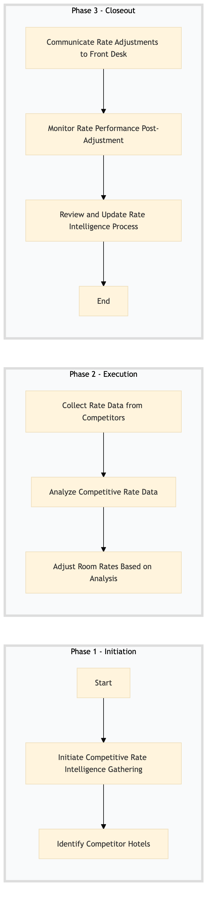

| Role | Steps |
|---|---|
| Revenue Manager | 1.1 1.2 2.1 2.2 2.3 3.1 3.2 3.3 |
| Executive Housekeeper | 1.1 1.2 2.1 2.3 3.1 |
| Step | Name | Role | System | Input | Output | KPI | Dec? | Exc? | Pain Point / Risk |
|---|---|---|---|---|---|---|---|---|---|
| 1.1 | Initiate Competitive Rate Intelligence Gathering | Revenue Manager | Oracle OPERA Cloud | None | Competitive Rate Intelligence Gathering Plan | Less than 30 minutes | N | N | Lack of standardized data collection methods across competitors |
| 1.2 | Identify Competitor Hotels | Revenue Manager | Oracle OPERA Cloud, SynXis CRS | Competitive Rate Intelligence Gathering Plan | List of Competitor Hotels | Less than 1 hour | N | N | Dynamic competitor list changes due to market fluctuations |
| 2.1 | Collect Rate Data from Competitors | Revenue Manager, Executive Housekeeper | Oracle OPERA Cloud, SynXis CRS, IDeaS G3 RMS | List of Competitor Hotels | Competitive Rate Data Report | Less than 2 hours per competitor | N | Y | Inconsistent data availability and formats from competitors |
| 2.2 | Analyze Competitive Rate Data | Revenue Manager | Oracle OPERA Cloud, Microsoft Power BI | Competitive Rate Data Report | Competitive Rate Analysis Report | Less than 4 hours | N | Y | Complex data analysis and interpretation |
| 2.3 | Adjust Room Rates Based on Analysis | Revenue Manager, Executive Housekeeper | Oracle OPERA Cloud, SynXis CRS | Competitive Rate Analysis Report | Updated Room Rates | Less than 1 hour | Y | N | Balancing competitive pricing with hotel profitability |
| 3.1 | Communicate Rate Adjustments to Front Desk | Revenue Manager, Executive Housekeeper | Oracle OPERA Cloud, Book4Time | Updated Room Rates | Rate Adjustment Communication Plan | Less than 30 minutes | N | Y | Ensuring accurate and timely communication to all staff |
| 3.2 | Monitor Rate Performance Post-Adjustment | Revenue Manager | Oracle OPERA Cloud, Microsoft Power BI | Rate Adjustment Communication Plan | Rate Performance Report | Daily monitoring | Y | N | Continuous performance tracking and adjustment |
| 3.3 | Review and Update Rate Intelligence Process | Revenue Manager | Oracle OPERA Cloud | Rate Performance Report | Updated Competitive Rate Intelligence Gathering Plan | Less than 1 hour | N | Y | Adapting to changing market conditions and competitor strategies |
A process for gathering and analyzing competitive rate intelligence to optimize room rates at a Marriott full-service hotel.